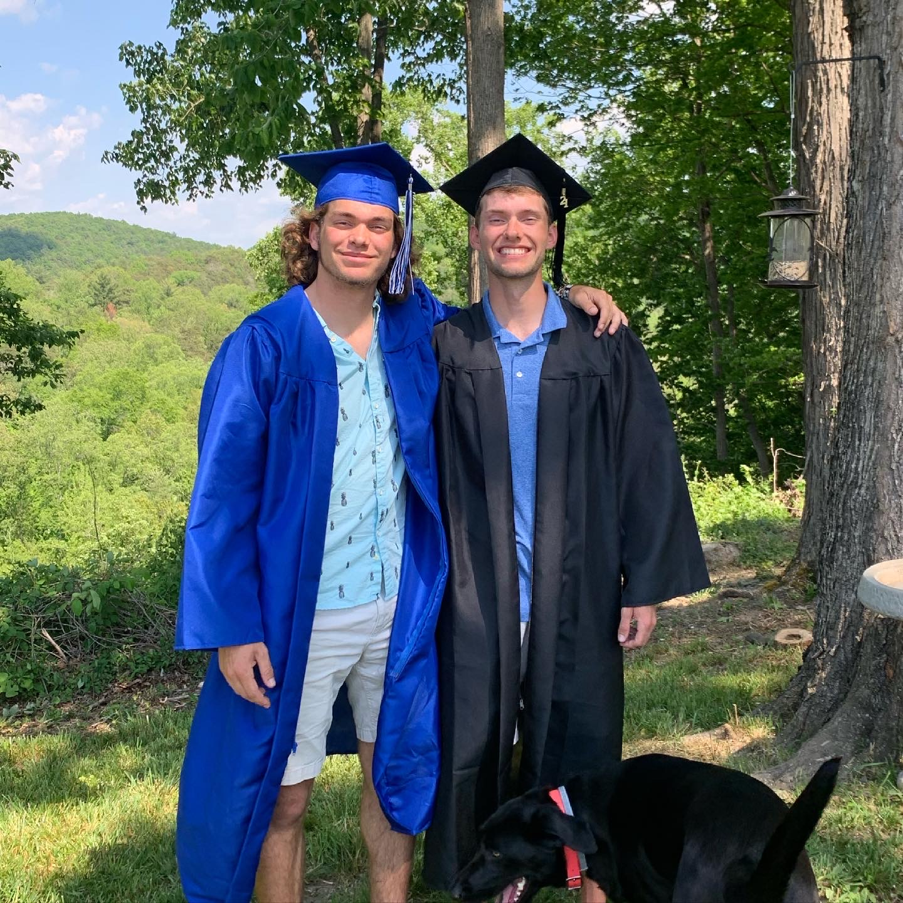
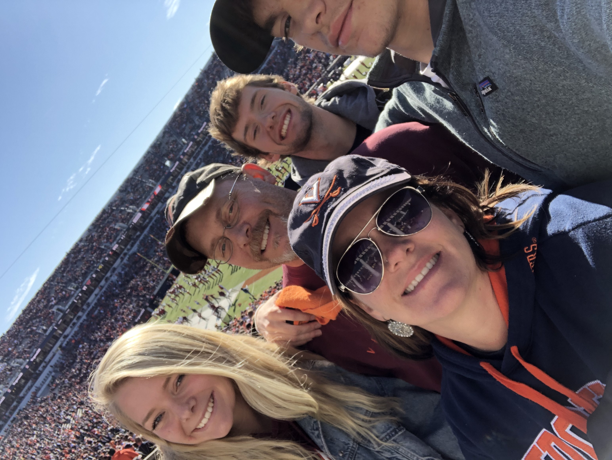
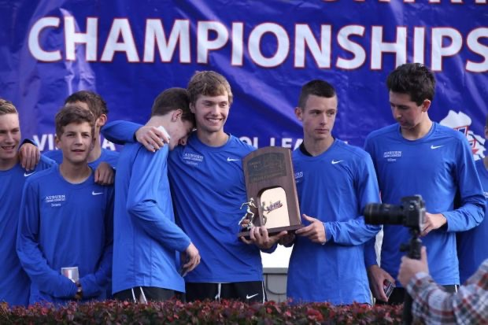
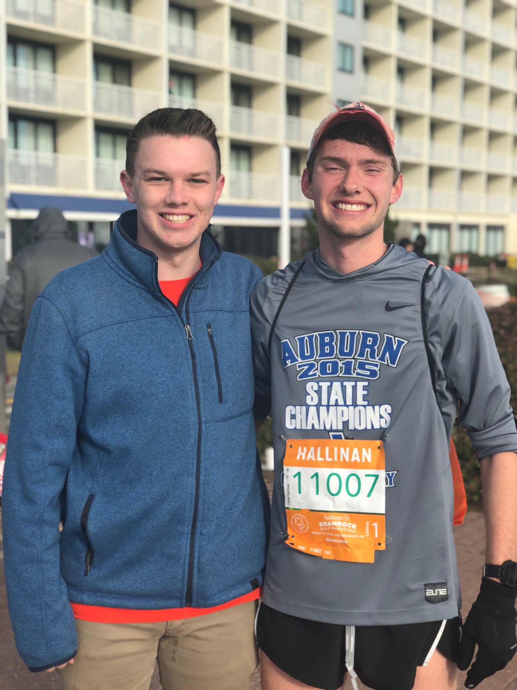

Caleb Hallinan
Research Assistant
Specialization in Machine Learning and Image Analysis

About Me
I am a research assistant at the
Lee Laboratory
in
Harvard Medical School
and
Boston Children's Hospital
.
I earned my BA in Biology and Statistics at the University of Virginia, Class of 2021.
My research currently focuses on understanding how machine learning and live cell imaging can be
better utilized to unravel phenotypic heterogeneity of cellular morphology/motility in normal
and abnormal conditions. Another project I have been working on attempts to use Deep Metric
Learning and UMAP clustering to identify important features in data sets.
My expertise includes data analysis and interpretation, machine learning techniques and
development/implementation of computing research tools.
I enjoy exploring new ideas and techniques to apply to my current research projects. A specific
field I am interested in is machine learning to develop new and improved methodologies to
analyze data, including deep learning and how this can impact the medical field. My goal is to
pursue a PhD in Statistics/Biostatistics to further explore these interests.
In my spare time I enjoy playing sports, hanging out with friends and running!
Some Pictures!





